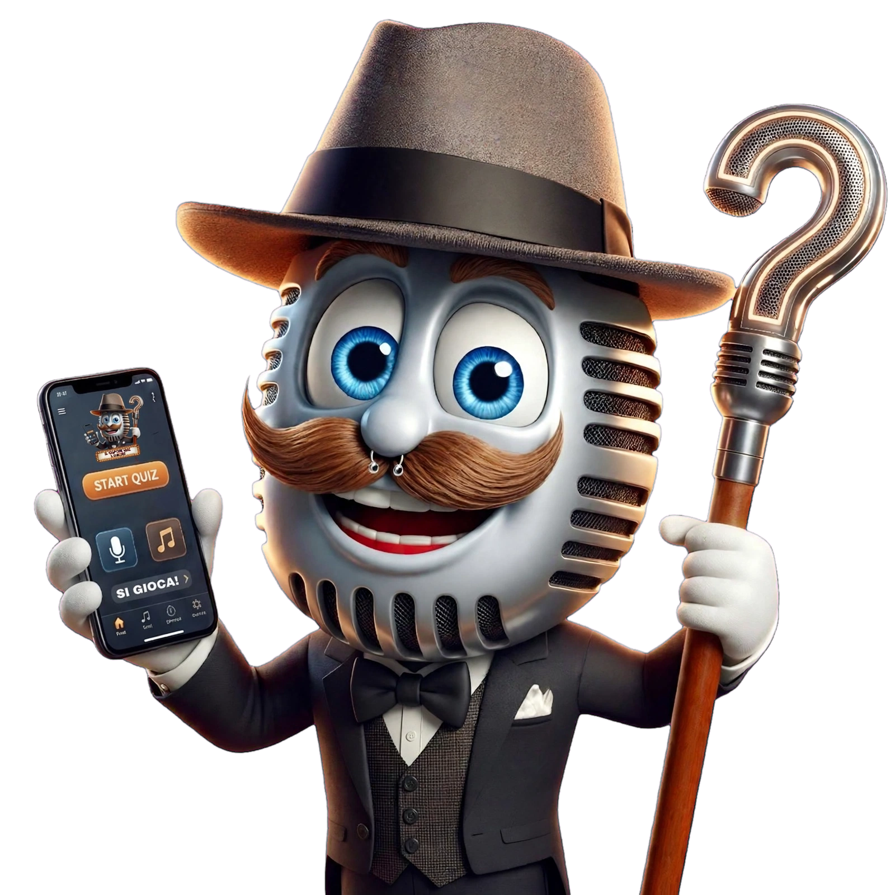

Piano bar, karaoke, quiz show e feste su misura per matrimoni, locali, bambini e anziani. Se c'è un evento da far ricordare, io ci sono con voce, tastiera e un pizzico di follia buona.

Canto da prima ancora di parlare — o almeno così racconto io. Ho iniziato come animatore nei villaggi turistici, passando per comico, mago, giocoliere e persino mangiafuoco: un'infarinatura di mestieri che oggi si sente in ogni serata, perché non porto mai solo la musica, ma uno spettacolo intero.
Ho vinto un concorso musicale e frequentato il corso del CET, il Centro Europeo di Toscolano fondato da Mogol, con la partecipazione di Lavezzi e Venuti. Da lì, tastiera e chitarra sono diventate il mio linguaggio principale — imparato prima a orecchio, poi affinato con anni di studio di solfeggio.
Oggi lavoro tra Agrigento e provincia con quattro residenze settimanali fisse e decine di eventi privati l'anno: matrimoni, feste di compleanno, animazione per bambini e per anziani, serate quiz nei locali. Quello che mi hanno affidato, l'ho sempre trattato come se fosse il mio evento.
Voce, tastiera e chitarra per serate in locali, piazze e feste private. Repertorio che si adatta al pubblico della serata, dal liscio al pop.
Consolle completa e gestione della serata, con sfide a tema e coinvolgimento diretto del pubblico.
Quiz interattivo, tombola e asta live per locali ed eventi, con la mia conduzione o a noleggio per chi vuole gestirlo in autonomia.
Musica da cerimonia, ricevimento e festa, animazione su misura, quiz a tema sugli sposi, effetti speciali: mi occupo dell'intrattenimento dall'ingresso all'ultimo ballo.
Giochi, musica e magia per far divertire i più piccoli — dagli anni di miniclub nei villaggi turistici alle feste di compleanno di oggi.
Musica, ballo e giochi pensati per centri diurni e feste della terza età, con un ritmo e un repertorio su misura.
"La notte prima del matrimonio gli ho mandato le foto per il quiz — erano le due e mezza del mattino — e lui in mezza giornata è riuscito a montare tutto." Da una recensione su Matrimonio.com
Controlla la disponibilità sul calendario e scrivimi per un preventivo su misura per matrimonio, festa privata o serata in locale.
Seguimi
I feed qui sotto si aggiornano da soli quando pubblichi sui tuoi profili. Ognuno va collegato una volta sola — vedi le istruzioni che ti ho scritto in chat.